obnizスターターキットは、 obnizを使う際によく使用する部品類を一つにまとめ、アイデアをすぐに実現できるようにするキットです。 このハンズオン記事を通して1つ1つのパーツの使い方をJavaScriptでハードウエアを動かしながら学んでいきましょう！ このハンズオン記事が終了する頃には様々なアイデアを実現できるようになっているはずです。では早速、上から順に始めていきましょう！
まず、obniz BoardをWi-Fiにつなぎます。Wi-Fi接続手順の詳細は、obnizDocsにあるobniz Boardの起動とWi-Fi設定 を参考にしてみてください。
接続するパーツを選び接続します。今回はLED信号モジュールの使い方から見ていきます。
開発者コンソールの開発→HTML プログラム(http://obniz.com/ja/console/program)にプログラムを書き実行します。今回は、1つ1つのプログラムをコピー＆ペーストで使えるようにコードを記載していますので、貼り付けて実行してみてください。
製作物
使用部品
http://obniz.com/ja/console/program からオンラインのHTMLエディタにいき、obniz idを入力します。下記のプログラムを丸ごとコピーし、自分のプログラム画面に貼り付けます。
<!DOCTYPE html>
<html>
<head>
<meta charset="utf-8">
<meta name="viewport" content="width=device-width, initial-scale=1">
<link rel="stylesheet" href="https://stackpath.bootstrapcdn.com/bootstrap/4.3.1/css/bootstrap.min.css">
<script src="https://obniz.com/js/jquery-3.2.1.min.js"></script>
<script src="https://unpkg.com/obniz@3.x/obniz.js"></script>
</head>
<body>
<div id="obniz-debug"></div>
<div class="wrap px-5 py-4">
<h3 class="title mb-4">Connect From Your Browser</h3>
<h5>LED</h5>
<div class="btnBox d-flex mb-4">
<div class="green_btn d-flex flex-column">
<button class="btn btn-success m-1" id="green_on">ON</button>
<button class="btn btn-success m-1" id="green_off">OFF</button>
</div>
<div class="yellow_btn d-flex flex-column">
<button class="btn btn-warning m-1" id="yellow_on">ON</button>
<button class="btn btn-warning m-1" id="yellow_off">OFF</button>
</div>
<div class="red_btn d-flex flex-column">
<button class="btn btn-danger m-1" id="red_on">ON</button>
<button class="btn btn-danger m-1" id="red_off">OFF</button>
</div>
</div>
</div>
<script>
var obniz = new Obniz("OBNIZ_ID_HERE");
obniz.onconnect = async function () {
var light = obniz.wired("Keyestudio_TrafficLight", {gnd:0, green:1, yellow:2, red:3});
$('#green_on').click(function () {
light.green.on();
});
$('#green_off').click(function () {
light.green.off();
});
$('#yellow_on').click(function () {
light.yellow.on();
});
$('#yellow_off').click(function () {
light.yellow.off();
});
$('#red_on').click(function () {
light.red.on();
});
$('#red_off').click(function () {
light.red.off();
});
obniz.switch.onchange = function(state) {
$('#print').text(state);
obniz.display.clear();
obniz.display.print(state);
}
}
</script>
</body>
</html>LED信号のGND, G(green), Y(yellow), R(red)のピンがobniz Boardの0, 1, 2, 3と繋がるように接続します。
実際にプログラムを実行し、各色のボタンのONボタンを押すと、ボタンと同じ色のライトがつき、OFFを押すと消えることが確認できます。
<HTMLに関して>
<Bootstrapに関して>
<javascriptに関して>
つまずきそうなポイントに絞って解説していきます。
6行目:
<meta name="viewport" content="width=device-width, initial-scale=1">viewportとは、webページの表示領域のことで、上記は、サイトのサイズをデバイスの横幅に、横スクロールが表示されない程度にフィットさせて表示するという設定。
13行目
<div id="obniz-debug"></div>これを記述することで、obnizのクラウド側の接続のステータス状態を自動出力してくれます。
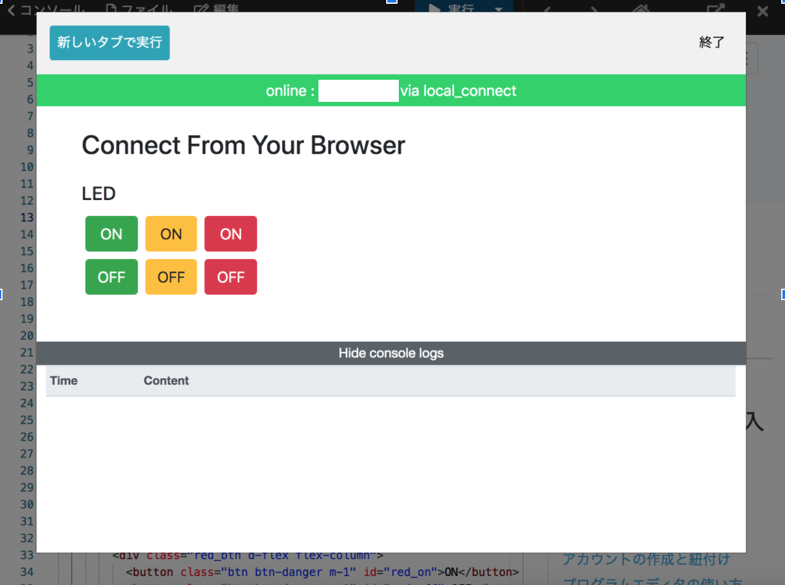
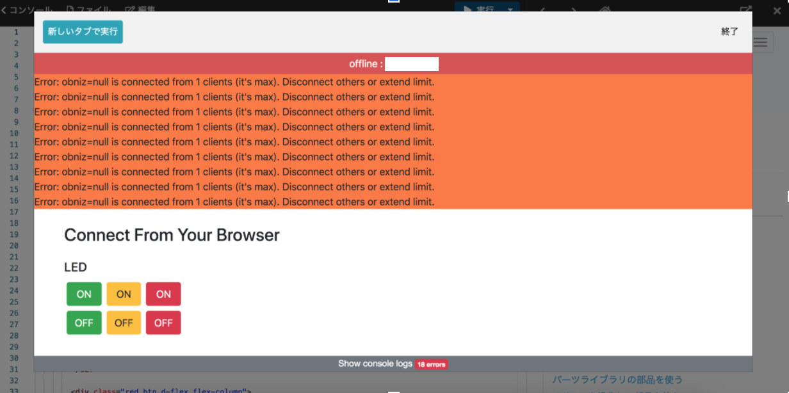
49~79行目
async function：javascriptの構文の1つで、非同期関数の定義に使用する。
obniz.onconnect = async function () {
...
}73~77行目
var light = obniz.wired("Keyestudio_TrafficLight", {gnd:0, green:1, yellow:2, red:3});第一引数は、Obniz SDKの中のLED信号モジュールのクラスを呼び出しており、第二引数はObnizのIOへ接続の設定を行っています。
製作物
使用部品
下記のプログラムを丸ごとコピーし、自分のプログラム画面に貼り付けます。
<!DOCTYPE html>
<html>
<head>
<meta charset="utf-8">
<meta name="viewport" content="width=device-width, initial-scale=1">
<link rel="stylesheet" href="https://stackpath.bootstrapcdn.com/bootstrap/4.3.1/css/bootstrap.min.css">
<script src="https://obniz.com/js/jquery-3.2.1.min.js"></script>
<script src="https://unpkg.com/obniz@3.x/obniz.js"></script>
</head>
<body>
<div id="obniz-debug"></div>
<div class="wrap px-5 py-4">
<h3 class="title mb-4">Connect From Your Browser</h3>
<h5>サーボモータ</h5>
<p>
角度 <input type="range" value="90" min="0" max="180" id="slider"> <span id="indicator">90</span>度
</p>
<div>
<center>
<button class="btn btn-primary m-1" id="blue_on">回転</button>
</center>
</div>
</div>
<script>
var obniz = new Obniz("OBNIZ_ID_HERE");
obniz.onconnect = async function () {
var servo = obniz.wired("ServoMotor", { gnd: 0, vcc: 1, signal: 2 });
servo.angle(90);
$("#slider").on('change',function() {
var angle = $('#slider').val();
$('#indicator').text(angle);
});
$('#blue_on').click(function () {
var angle = $('#indicator').text();
servo.angle(angle);
});
}
</script>
</body>
</html>サーボモーターのマイナス(gnd)、プラス(vcc)、信号(signal)のピンをそれぞれ obniz Boardの0, 1, 2に接続します。
実際にプログラムを実行すると、サーボモーターが初期位置(90度)に移動し、手動でレンジバーを任意の角度へスライドした後に回転ボタンを押すと、サーボモータがその角度に回転することが確認できます。
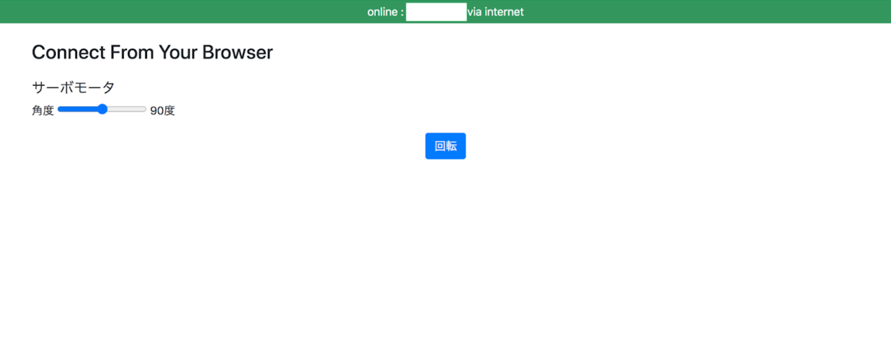
<JQueryに関して>
つまずきそうなポイントに絞って解説していきます。
8行目
<script src="https://obniz.com/js/jquery-3.2.1.min.js"></script>JqueryをCDNから読み込むための一行です。
CDNとは、Contents Delivery Network の略で、サーバー上に公開されたプログラムをユーザーが自由に使うことができます。
JQueryは、公式サイトのDownloadページからjQueryのソースコードからファイルをダウンロードして使うこともできますが、CDNから読み込んで利用する方がはるかに手軽です。
ちなみに、obniz.jsもCDNから利用しています。
21~23行目
<p>
角度 <input type="range" value="90" min="0" max="180" id="slider"> <span id="indicator">90</span>度
</p><input type="range">を指定することで、レンジスライダーを呼び出すことができます。
このレンジスライダーの最小値を0, 最大値を180、初期値を90として設定しています。
また、spanタグを呼び出しているのは、画面に出力する数字の部分にidを割り振るためで、今回はindicatorというidを割り振っています。
38行目
var servo = obniz.wired("ServoMotor", { gnd: 0, vcc: 1, signal: 2 });サーボモータのgndピン、vccピン、signalピンをそれぞれobniz Boardの0, 1, 2番に差し込む設定を表しています。
41行目~44行目
$("#slider").on('change',function() {
var angle = $('#slider').val();
$('#indicator').text(angle);
});idがsliderの要素の値が変わったら、idがsliderの要素の値を取得して、idがindicatorの要素内のテキストを取得した値に上書きするという処理です。
ここで、idがsliderの要素とは、レンジスライダーを表し、idがindicatorの要素は、角度の数字を表します。
[idがsliderの要素]
<input type="range" value="90" min="0" max="180" id="slider">...</input>
[idがindicatorの要素]
<span id="indicator">90</span>
<JQueryのon>
製作物
使用部品
http://obniz.com/ja/console/program からオンラインのHTMLエディタにいき、obniz idを入力します。下記のプログラムを丸ごとコピーし、自分のプログラム画面に貼り付けます。
<html>
<head>
<meta name="viewport" content="width=device-width, initial-scale=1">
<script src="https://obniz.com/js/jquery-3.2.1.min.js"></script>
<script src="https://unpkg.com/obniz@3.x/obniz.js"></script>
</head>
<body>
<div id="press">
ボタンが押された？
</div>
<script>
var obniz = new Obniz("OBNIZ_ID_HERE");
obniz.onconnect = async function () {
var button = obniz.wired("Keyestudio_Button", {signal:0, vcc:1, gnd:2});
button.onchange = function(pressed){
console.log("pressed " + pressed)
if(pressed == false){
$("#press").text("押された！");
colors=new Array(10);
colors[0]="yellow";
colors[1]="red";
colors[2]="blue";
colors[3]="green";
colors[4]="lime";
colors[5]="brown";
colors[6]="gray";
colors[7]="orange";
colors[8]="purple";
colors[9]="fuchsia";
index=Math.floor(10*Math.random());
document.bgColor=colors[index];
}else{
$("#press").text("押されてない...");
document.bgColor="white";
}
};
};
</script>
</body>
</html>ボタンのsignal, vcc, gndのピンをそれぞれobniz Boardのピン番号0, 1, 2に接続する。
実際にプログラムを実行してみてください。ボタンを押すと、ブラウザの背景色が変化することを確認できると思います。ボタンを押した時は、次の色のどれかがランダムで背景色として適用されます。
[ボタンを押していない時]
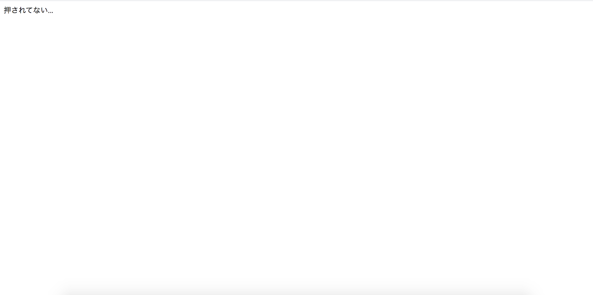
[ボタンを押した時]
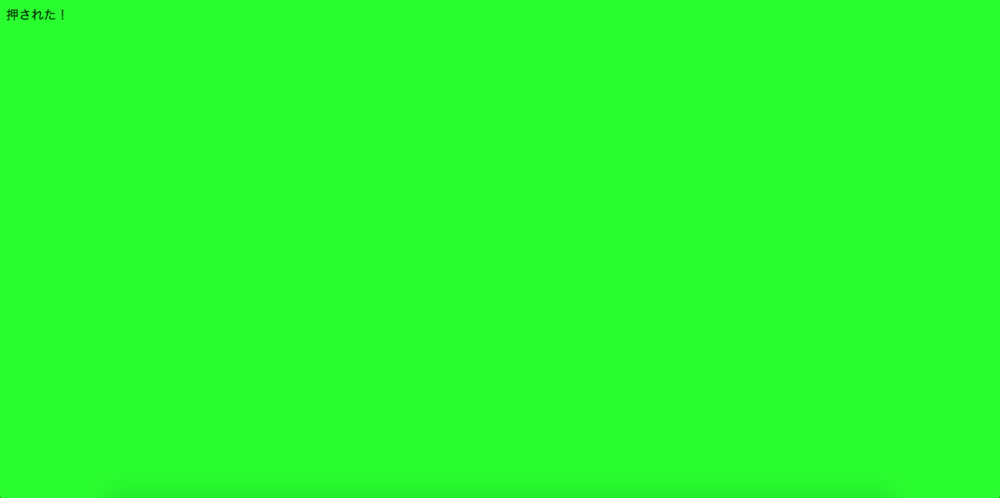
つまずきそうなポイントに絞って解説していきます。
18行目:
var button = obniz.wired("Keyestudio_Button", {signal:0, vcc:1, gnd:2});Keyestudio_Buttonのsignal, vcc, gndのピンをそれぞれobniz Boardのピン番号0, 1, 2に差し込む設定を表しています。
19~40行目:
button.onchange = function(pressed){
...
}ボタンが押された時、離された時にcallback関数を呼び出します。
22行目:
$("#press").text("押された！");JQueryを使用した書き方で、idがpressの要素が持つテキストノードを上書きします
34行目:
index=Math.floor(10*Math.random());0,1,3,4,5,6,7,8,9のいずれかを変数indexxに代入する
Math.foor(引数)
Math.random()
38行目:
document.bgColor="white";[書き方 document.bgColor="16進数、または色名"]
Javascriptの記述で、ページの背景色を参照または設定します。このプロパティは、ページの表示後でも背景色の変更が可能です。
製作物
使用部品
超音波距離センサモジュール (HC-SR04)は下記の端子を持っています
Vcc – 電源入力
Trig – トリガー 超音波出力用の信号を送信
Echo – エコー 超音波入力用の信号を受信
GND – グランド
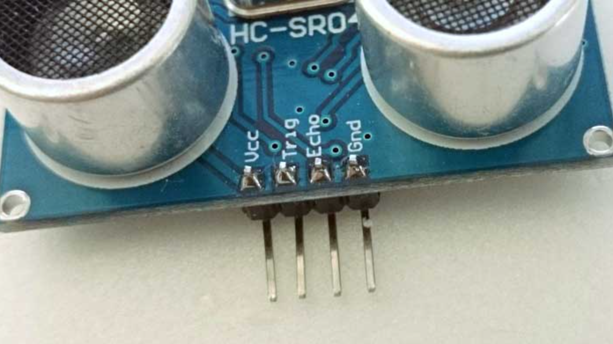
http://obniz.com/ja/console/program からオンラインのHTMLエディタにいき、obniz idを入力します。下記のプログラムを丸ごとコピーし、自分のプログラム画面に貼り付けます。
<html>
<head>
<meta name="viewport" content="width=device-width, initial-scale=1">
<script src="https://obniz.com/js/jquery-3.2.1.min.js"></script>
<script src="https://unpkg.com/obniz@3.x/obniz.js"></script>
</head>
<body>
<script>
var obniz = new Obniz("OBNIZ_ID_HERE");
obniz.onconnect = async function () {
var hcsr04 = obniz.wired("HC-SR04", {gnd:0, echo:1, trigger:2, vcc:3});
var light = obniz.wired("Keyestudio_TrafficLight", {gnd:4, green:5, yellow:6, red:7});
obniz.onloop = async function(){
let distance = 0;
let count = 0;
for (let i=0; i<3; i++) {
const val = await hcsr04.measureWait();
if (val) {
count++;
distance += val;
}
}
if (count > 1) {
distance /= count;
}
console.log(distance);
if (distance < 50){
light.single("red");
} else if (distance <300) {
light.single("yellow");
} else {
light.single("green");
}
}
};
</script>
</body>
</html>距離センサのVcc, Trig, Echo, Gndのピンがobniz Boardの0, 1, 2, 3と繋がるように接続します。
また、LED信号のGND, G, Y, Rのピンがobniz Boardの4, 5, 6, 7と繋がるように接続します。
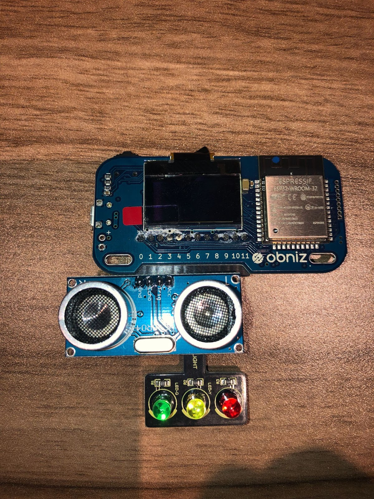
実際にプログラムを実行すると、距離によって50mm以内→赤，50mm以上で300mm以内→黄色，300mm以上→緑というようにLED信号が光ります
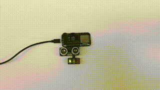
つまずきそうなポイントに絞って解説していきます。
20~26行目:
距離センサーで、最大3回測定を行い、その平均値を測定値としてdistanceという変数に格納する処理。
for (let i=0; i<3; i++) {
const val = await hcsr04.measureWait();
if (val) {
count++;
distance += val;
}
}31~37行目:
距離センサーの計測結果の数値が50mm未満の場合はLED信号の赤を点灯、300mm未満の時は黄色を点灯、300mm以上離れているときは緑を点灯する。
if (distance < 50){
light.single("red");
} else if (distance <300) {
light.single("yellow");
} else {
light.single("green");
}製作物
使用部品
http://obniz.com/ja/console/program からオンラインのHTMLエディタにいき、obniz idを入力します。下記のプログラムを丸ごとコピーし、自分のプログラム画面に貼り付けます。
<html>
<head>
<!-- Chart.jsを導入 -->
<script src="https://cdnjs.cloudflare.com/ajax/libs/Chart.js/2.9.4/Chart.min.js"></script>
<!-- obniz.jsを導入 -->
<script src="https://unpkg.com/obniz@3.x/obniz.js"></script>
<canvas id="myChart"></canvas>
</head>
<body>
<script>
var ctx = document.getElementById("myChart");
var tempLists = []; //温度の保持用
var labelLists = []; //ラベル(横軸)の保持用
var obniz = new Obniz("OBNIZ_ID_HERE"); //OBNIZ ID here
obniz.onconnect = async function () { // when obniz connected...
var chart = new Chart(ctx, { // Chartの設定
type: 'line', //折れ線グラフにする
data: {
labels: [],
datasets: [
{
label: '現在の温度', //ラベルを設定
data: []
}
]
},
options: { //Chartのオプションを設定
scales: {
yAxes: [{
ticks: {
suggestedMax: 30, // y軸の最低値
suggestedMin: 20, // y軸の最高値
stepSize: 1, // 1℃ごとに軸に表示
callback: function (value, index, values) {
return value + '℃' // 数字の後に"℃"の表示を付ける
}
}
}]
},
}
});
// use Keyestudio_TemperatureSensor library
var tempsens = obniz.wired("Keyestudio_TemperatureSensor", { signal: 0, vcc: 1, gnd: 2 });
var count = 0; // count temperature change
obniz.repeat(async function () {
var temp = await tempsens.getWait();
count++;
tempLists.push(temp.toFixed(1)); //温度を小数点1桁に統一して格納
labelLists.push(count); //ラベルを格納
chart.data.labels = labelLists; //ラベルデータを反映させる
chart.data.datasets[0].data = tempLists; //温度データを反映させる
chart.update(); //グラフを再描画
console.log(temp.toFixed(1));
}, 1000);
}
</script>
</body>
</html>人感センサーの信号(signal)、プラス(vcc)、マイナス(gnd)のピンをそれぞれ obniz Boardの0, 1, 2に接続します。
実際にプログラムを実行すると、ブラウザにグラフが表示され、１秒おきに温度データがプロットされていきます。
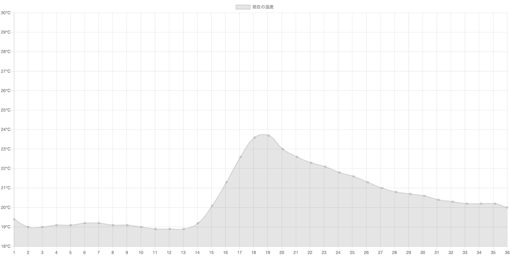
つまずきそうなポイントに絞って解説していきます。
5行目:
<script src="https://cdnjs.cloudflare.com/ajax/libs/Chart.js/2.9.4/Chart.min.js"></script>chart.jsをCDNから読み込むための一行です。
CDNとは、Contents Delivery Network の略で、サーバー上に公開されたプログラムをユーザーが自由に使うことができます。
8〜45行目:
canvas id="myChart">
...
}chart.jsの詳細な説明は今回は割愛させていただきます。
51行目:
obniz.repeat(async function () {
...
}, 1000);obniz.repeat()は繰り返し処理を行う関数であり、repeatに渡した関数は繰り返し実行されます。その上obnizとの接続が切れたら自動的に止まります。第2引数が、繰り返しの間隔でして、デフォルトは100ms。今回は1000msに設定。
52行目:
var temp = await tempsens.getWait();製作物
使用部品
下記のプログラムを丸ごとコピーし、自分のプログラム画面に貼り付けます。
<html>
<head>
<meta charset="utf-8" />
<meta name="viewport" content="width=device-width, initial-scale=1" />
<script src="https://code.jquery.com/jquery-3.2.1.min.js"></script>
<script src="https://unpkg.com/obniz@3.x/obniz.js" crossorigin="anonymous"></script>
</head>
<body>
<div id="obniz-debug"></div>
<script>
console.log(document.bgColor);
var obniz = new Obniz("OBNIZ_ID_HERE");
obniz.onconnect = async function () {
var sensor = obniz.wired("Keyestudio_PIR", {signal:0, vcc:1, gnd:2});
var light = obniz.wired("Keyestudio_TrafficLight", {gnd:8, green:9, yellow:10, red:11});
sensor.onchange = function(val){
console.log(val);
if(val == true){
console.log("誰かいた！");
light.green.off();
light.red.on();
document.bgColor="red";
}else{
console.log("誰もいない...");
light.red.off();
light.green.on();
document.bgColor="green";
}
}
};
</script>
</body>
</html>人感センサーの信号(signal)、プラス(vcc)、マイナス(gnd)のピンをそれぞれ obniz Boardの0, 1, 2に接続します。
また、LED信号のGND, G, Y, Rがobniz Boardの8, 9, 10, 11と繋がるように接続します。
実際にプログラムを実行すると、人感センサが動きを察知し、LEDを光らせます。時間センサーが動き検出すると、ブラウザとLED信号が赤色に光り確認できます。また、動きを検出できなくなるとブラウザとLED信号が緑色に光り確認できます。
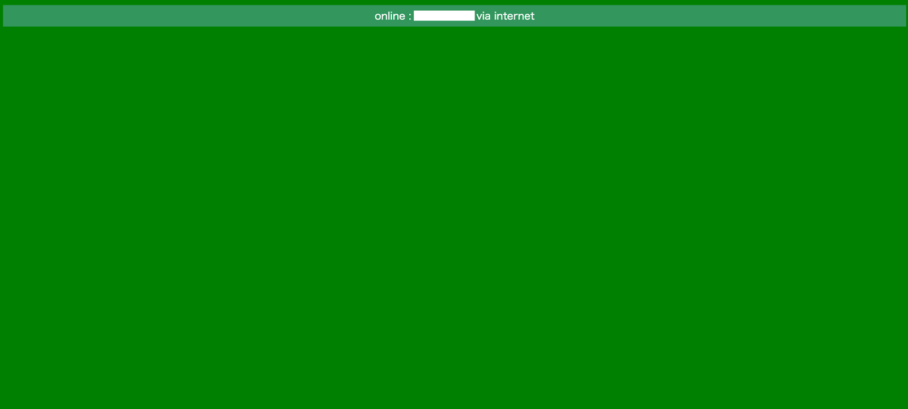
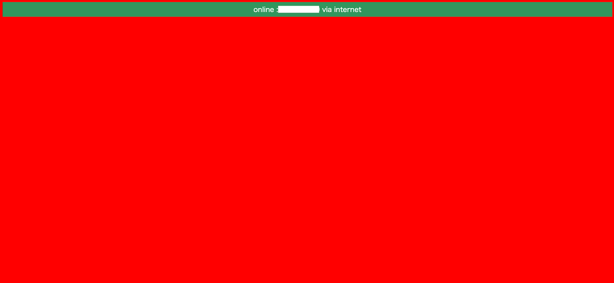
つまずきそうなポイントに絞って解説していきます。
18行目
var sensor = obniz.wired("Keyestudio_PIR", {signal:0, vcc:1, gnd:2});第一引数は、Obniz SDKの中の人感センサーのクラスを呼び出しており、第二引数はObnizのIOへ接続の設定を行っています。
25~35行目
if(val == true){
console.log("誰かいた！");
light.green.off();
light.red.on();
document.bgColor="red";
}else{
console.log("誰もいない...");
light.red.off();
light.green.on();
document.bgColor="green";
}まず、人感センサーがtrue(動きを検知)を返した時にLED信号の緑色をOFFにし、赤色をONにする処理を行っています。document.bgColorではバックグラウンドカラーを赤色に変更しています。
それ以外(false)を返したときは、LED信号の赤色をOFFにし、緑色をONにする処理を行っています。document.bgColorではバックグラウンドカラーを緑色に変更しています。
29行目
document.bgColor="red";ブザーの只今準備中です。
製作物
使用部品
http://obniz.com/ja/console/program からオンラインのHTMLエディタにいき、obniz idを入力します。下記のプログラムを丸ごとコピーし、自分のプログラム画面に貼り付けます。
<!DOCTYPE html>
<html>
<head>
<meta charset="utf-8" />
<meta name="viewport" content="width=device-width, initial-scale=1" />
<link rel="stylesheet" href="https://stackpath.bootstrapcdn.com/bootstrap/4.3.1/css/bootstrap.min.css" />
<script src="https://code.jquery.com/jquery-3.2.1.min.js"></script>
<script src="https://unpkg.com/obniz@3.x/obniz.js" crossorigin="anonymous" ></script>
</head>
<body>
<div id="obniz-debug"></div>
<div class="wrap px-5 py-4">
<h3 class="title mb-4">Connect From Your Browser</h3>
<h5>Buzzer</h5>
<div class="btnBox d-flex mb-4">
<div class="do_btn d-flex flex-column">
<button class="btn btn-success m-1" id="do_on_1">ド</button>
<button class="btn btn-danger m-1" id="stop">STOP</button>
</div>
<div class="re_btn d-flex flex-column">
<button class="btn btn-success m-1" id="re_on">レ</button>
</div>
<div class="mi_btn d-flex flex-column">
<button class="btn btn-success m-1" id="mi_on">ミ</button>
</div>
<div class="fa_btn d-flex flex-column">
<button class="btn btn-success m-1" id="fa_on">ファ</button>
</div>
<div class="so_btn d-flex flex-column">
<button class="btn btn-success m-1" id="so_on">ソ</button>
</div>
<div class="ra_btn d-flex flex-column">
<button class="btn btn-success m-1" id="ra_on">ラ</button>
</div>
<div class="si_btn d-flex flex-column">
<button class="btn btn-success m-1" id="si_on">シ</button>
</div>
<div class="do_btn d-flex flex-column">
<button class="btn btn-success m-1" id="do_on_2">ド</button>
</div>
</div>
</div>
<script>
var obniz = new Obniz("OBNIZ_ID_HERE");
obniz.onconnect = async function () {
var speaker = obniz.wired("Keyestudio_Buzzer", {signal:0, vcc:1, gnd:2});
$('#do_on_1').click(function () {
speaker.play(261.626);
});
$('#re_on').click(function () {
speaker.play(293.665);
});
$('#mi_on').click(function () {
speaker.play(329.628);
});
$('#fa_on').click(function () {
speaker.play(349.228);
});
$('#so_on').click(function () {
speaker.play(391.995);
});
$('#ra_on').click(function () {
speaker.play(440);
});
$('#si_on').click(function () {
speaker.play(493.883);
});
$('#do_on_2').click(function () {
speaker.play(523.251);
});
$('#stop').click(function () {
speaker.stop();
});
}
</script>
</body>
</html>ブザーのピンに表記されている、S(signal), V(vcc), G(gnd)のピンがそれぞれobniz Boardの0, 1, 2と繋がるように接続します。
実際にプログラムを実行すると、緑色の「ド」「レ」「ミ」「ファ」「ソ」「ラ」「シ」「ド」と、赤色の「STOP」のボタンが表示されます。緑色のボタンを押すことでその音階の音が鳴ることが確認でき、赤色の「STOP」ボタンを押すことで止まることが確認できます。
つまずきそうなポイントに絞って解説していきます。
63行目:
var speaker = obniz.wired("Keyestudio_Buzzer", {signal:0, vcc:1, gnd:2});第一引数は、Obniz SDKの中のブザーのクラスを呼び出しており、第二引数はObnizのIOへ接続の設定を行っています。
66,98行目
speaker.play(260.7);260.7Hzの音(ド)を流す。
speaker.stop();音を止める。
66〜94行目
各ボタンのブザー音の周波数について補足。
音名 | 周波数 |
ド | 261.626Hz |
レ | 293.665Hz |
ミ | 329.628Hz |
ファ | 349.228Hz |
ソ | 391.995Hz |
ラ | 440Hz |
シ | 493.883Hz |
ド | 523.251Hz |
Obnizのスターターキットを実際に動かしてみて、制御を行うのが意外に簡単に感じたのではないでしょうか？
IoTは様々な領域の知識が必要となりますが、IoT開発を楽しむことがIoT開発に慣れるための第一歩です。
このサイトでは、とっつきやすいように様々なアプローチで部品や制御モデルを用いたIoT開発コンテンツをわかりやすく紹介していきます。
また、お困り事や、相談したい事などありましたら、大小問わずお気軽にお問い合わせください。サポートさせて頂きます。